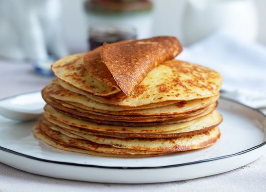

Tiempo total
25 minutos
Porciones
8 crepes
Dificultad
Fácil
Ingredientes
- 125 g de harina de trigo
- 2 huevos grandes
- 250 ml de leche
- 1 cucharada de azúcar
- 1 pizca de sal
- 1 cucharadita de extracto de vainilla (opcional)
- 30 g de mantequilla derretida
- Relleno a gusto: chocolate, mermelada, fruta, nata montada, miel, etc.
Utensilios necesarios
- Bol grande
- Batidor manual o eléctrico
- Sartén antiadherente pequeña
- Cucharón para verter la masa
- Espátula fina
- Taza medidora
- Cuchara o pincel para mantequilla
Cómo preparar Crepes Dulces paso a paso
- En un bol grande, bate los huevos con la leche, el azúcar, la pizca de sal y la vainilla si la usas. Mezcla bien hasta que quede homogéneo.
- Tamiza la harina sobre la mezcla de huevos y leche y bate suavemente hasta que no queden grumos. La masa debe quedar líquida y fluida, sin grumos de harina.
- Añade la mantequilla derretida y mezcla nuevamente. Esto ayudará a que las crepes queden suaves y con un ligero sabor a mantequilla.
- Calienta una sartén antiadherente a fuego medio y unta un poco de mantequilla con un pincel o papel absorbente. Vierte un cucharón de masa y gira la sartén para que la masa cubra toda la superficie de manera uniforme en una capa fina.
- Cocina la crepe durante 1-2 minutos hasta que los bordes se despeguen y la base tenga un ligero dorado. Usa la espátula para dar la vuelta con cuidado y cocina 1 minuto más del otro lado.
- Retira la crepe cocida y colócala en un plato. Repite el proceso con el resto de la masa, engrasando ligeramente la sartén entre crepes si es necesario.
- Rellena las crepes con chocolate, mermelada, fruta, nata montada, miel u otros ingredientes de tu elección. Dobla o enrolla y sirve inmediatamente.
Consejos para crepes perfectos
Para crepes finos y suaves, asegúrate de que la sartén esté bien caliente antes de verter la masa. No cocines demasiado cada crepe, ya que se secará y perderá suavidad.
Puedes preparar la masa con antelación y dejarla reposar 20-30 minutos en el frigorífico. Esto ayuda a que la harina absorba el líquido y las crepes queden más uniformes y flexibles.